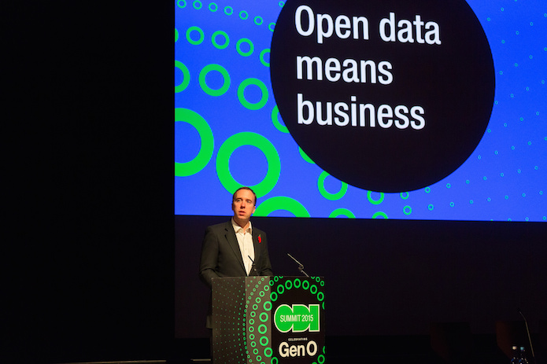

The ODI shows data infrastructure is growing, with £50m generated from data so far
The ODI and its network of startups, franchises and partners, have generated £50m from data since the ODI opened in December 2012, highlighting data’s ongoing value for the global economy
 Former Minister for the Cabinet Office Matthew Hancock praised the ODI for building data infrastructure and giving government "a good base on which to build", at the ODI Summit in 2015. CC BY 2.0, uploaded by [The ODI](https://www.flickr.com/photos/ukodi/22557856900/ “The ODI").
The work of the ODI and its global network has included data infrastructure projects in sectors such as finance, agriculture and transport, which underpin the digital economy and are improving public services, business operations and government accountability.
The £50m includes direct commercial value and inward investments for the UK, and international value created by stimulating open innovation around the world.
Some of the most significant projects are listed below.
Building data infrastructure
Building on the success of the Open Banking Standard, (which the Competition and Markets Authority recently stated will be used by the new open banking API), the ODI has launched an Open Banking Development Group to drive open innovation in the UK and internationally. It is supported by nine banks (AIB Group, Bank of Ireland, Barclays, Danske, HSBC Group, Lloyds Banking Group, Nationwide, RBS Group and Santander) and the broader fintech community (FDATA, ScaleUp Institute and others).
The Transport Systems Catapult and the ODI have partnered to build data infrastructure and open standards that support transport innovation and ‘intelligent mobility’.
Through its international collaborative programmes, the ODI has helped to improve the quality of open data, through Open Data Certificates and the European Data Portal, for example.
Supporting open enterprise
The ODI has supported Thomson Reuters, Deutsche Bank, Syngenta and other large enterprises to open up their data for the first time, creating new products and commercial opportunities. Find out more in our ‘Open enterprise’ report.
The ODI team has helped Arup to connect with a network of open data innovators and startups, allowing the company to tap into the latest expertise, stay agile, save time and money, and develop new products and ways of working.
Working alongside UK Government, the ODI policy team helped the Department for Environment Food & Rural Affairs unlock over 12,000 datasets.
Through open data competitions, incubation programmes (including its own start up programme and ODINE), as well as its membership network, the ODI has helped over 60 startups to build services using open data from across the public and private sectors. These include:
-
Provenance, which helps makers tell the stories behind their products in order to empower customers with supply-chain transparency and traceability for materials, ingredients and products.
Imin, which aggregates open data about physical activity opportunities – such as empty squash courts and yoga class spaces – and provides a suite of APIs for organisations to build digital health and wellness applications to help people be more physically active.
OpenCorporates, which is the largest open database of companies in the world, with over 100 million companies. It has recently launched OpenGazettes, which opens up government gazettes, aggregates them across multiple countries and enables searches into corporate events information.
The ODI has trained over 5,000 people (from lawyers to journalists, business leaders to policymakers), and dozens of trainers, improving data literacy among organisations and citizens around the world.
Building data capability around the world
The ODI has franchises, ‘ODI Nodes’, promoting open data in over 20 countries. ODI Queensland has just secured a two-year, $400,000 funding partnership with the Queensland Government. Partly funded by a network of 10 public and private sponsors, along with its own commercial activity, ODI Leeds is at the forefront of the North of England’s open innovation and data movement, leading hacks, innovation pathways, projects and services.
Governments ranging from Mexico to Malaysia are creating startup programmes with the ODI’s support, laying the foundations for collaboration and trade in a digital world.
Gavin Starks, CEO at the ODI, said:
We are helping build the data infrastructure for the UK and beyond. As our economy and society continue to become data-driven, we need to address the fact that data is as important as roads, water and energy. The network growing around the ODI includes startups, SMEs, enterprises and individuals in the public and private sectors. Working with our partners and diverse communities, we will continue to support and convene data pioneers, helping them develop open standards, improve data literacy, build trust, address policy, create business models, and tackle challenges that impact everyone. Together, we will help build a strong data infrastructure that enables open innovation – at web scale.
For more information about the ODI and what it can do for you, email [email protected] or ask for Tom Tharakan at [email protected]